A light-luxury system for private aviation.
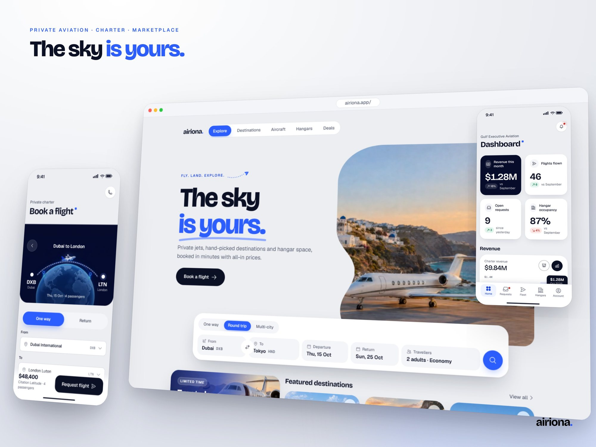
Four businesses, one calm surface.
Clients charter a jet from A to B. Owners sell aircraft. Hosts lease hangar space. Operators run all of it. Airiona puts the four on one account and one design language: paper-light canvas, ink type, a single Ion Blue accent, large soft radii and prices that are always all-in.
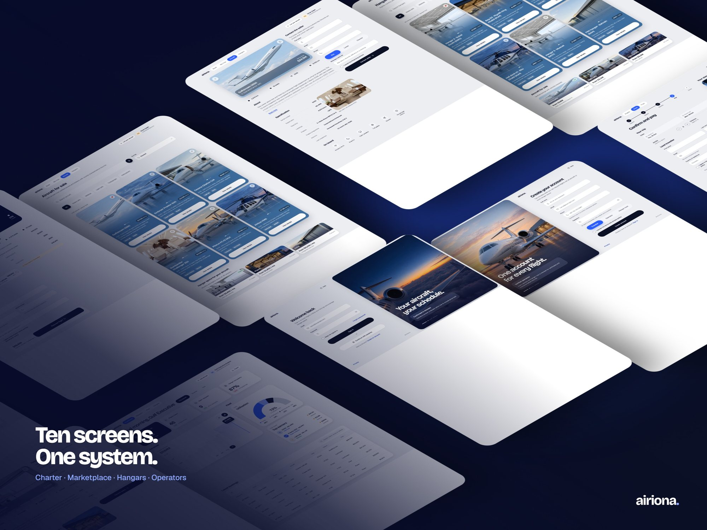
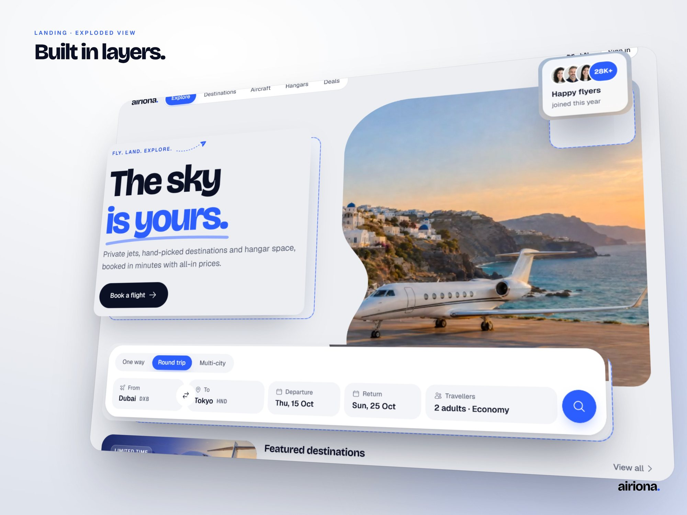
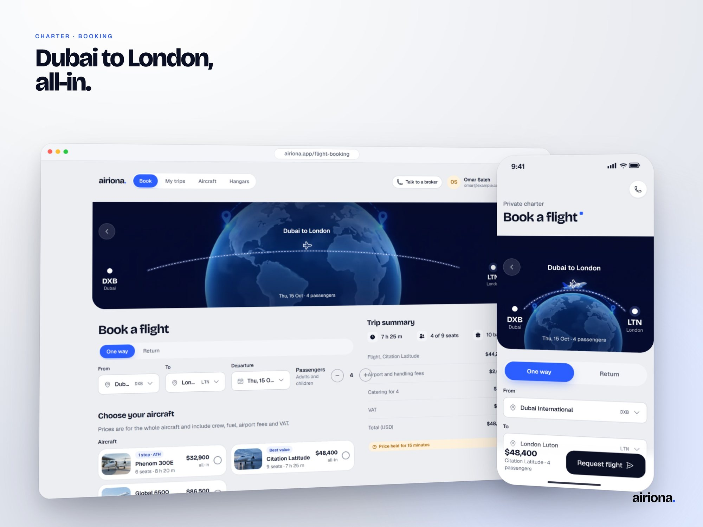
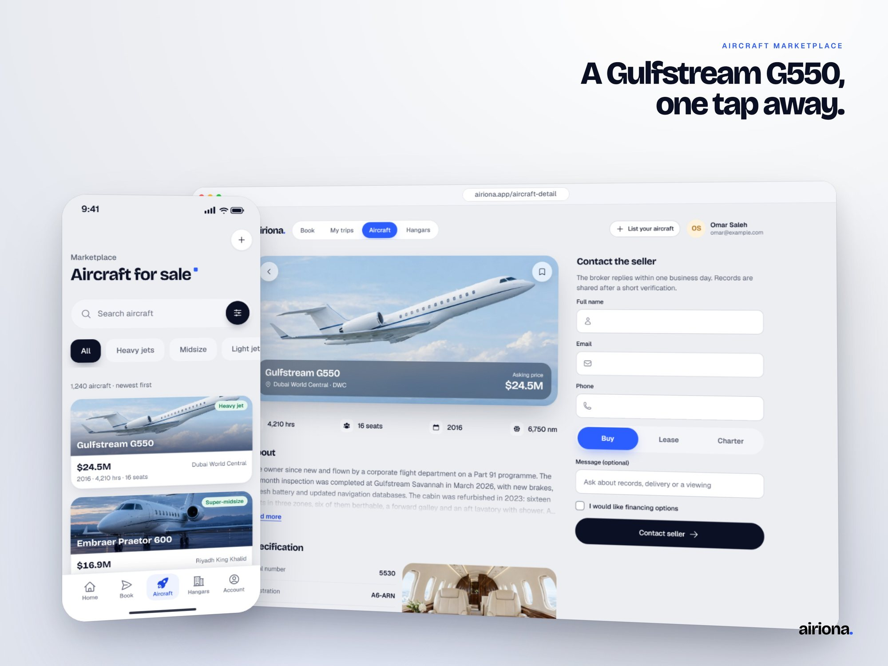
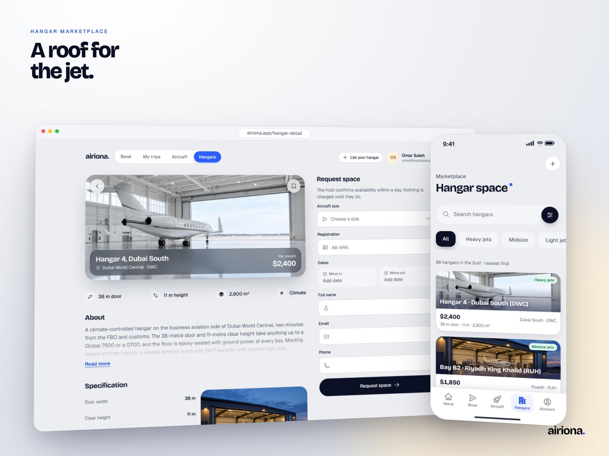
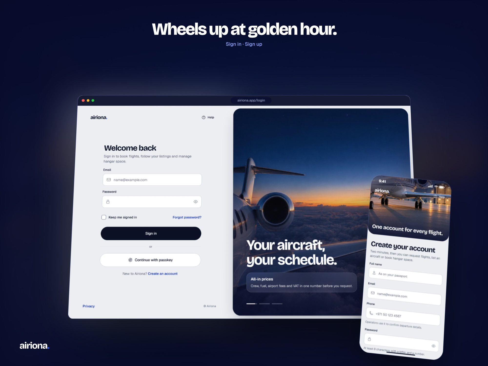
One camera move, eight scenes.
Every cut is velocity-matched: arrivals share one ease and exits mirror it, so nothing sits still at a cut. Rendered frame by frame from the real screens, with the hero video playing inside the phone. The closing voice-over is generated locally with Qwen3-TTS.
- 0.0sThe headline rises over the clifftop jet; the underline draws itself.
- 1.6sThe hero video shrinks into the landing app's screen, which scrolls.
- 4.3sBooking slides in; a tap selects Citation Latitude, all-in.
- 6.6sHard switch to midnight; revenue counts up to $1.28M.
- 9.0sThe component wall goes isometric; four parts pop forward.
- 11.3sWhip pans: buy the jet, park the jet.
- 13.0sThe wordmark rises and its dot lands on the URL.
- 15.0sCredit, with a voice-over: made by Mohamed Shaban, m2a-dev team; visit m2a-dev.de.
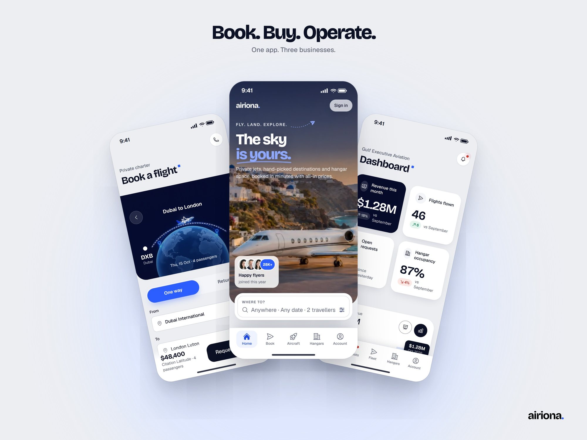
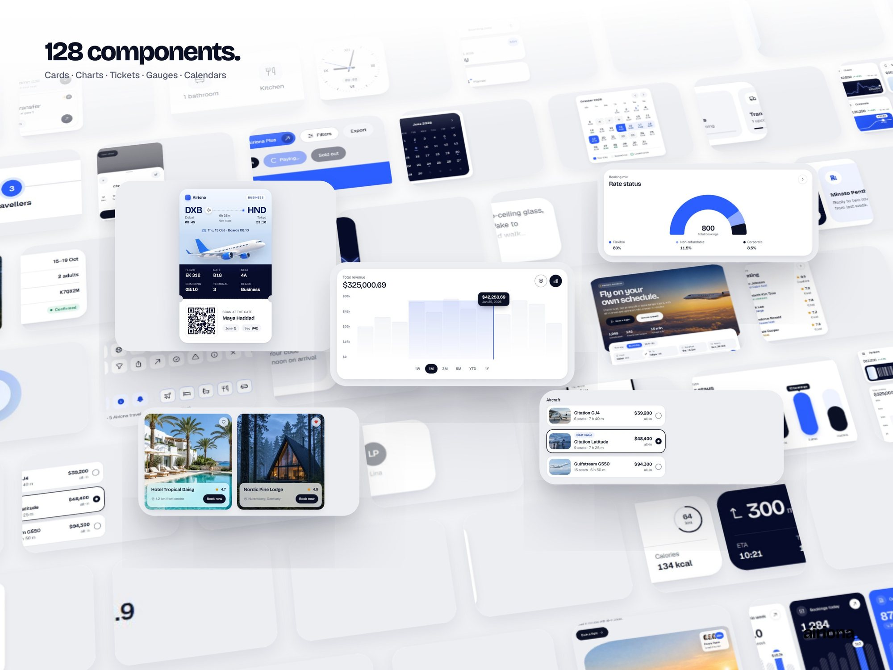
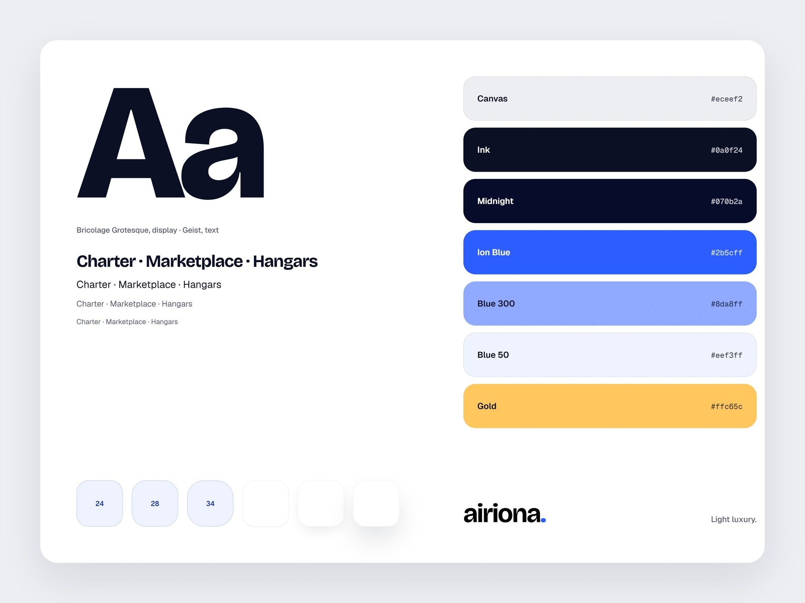
From design to checked page.
Each page starts as a spec: every section mapped to a real component with a reason, typed data and validated forms, phone layout first. A pipeline builds it, screenshots it at 390, 768 and 1280 and in the app frame, and fails on sideways scroll, small tap targets, broken headings or a form that submits empty.
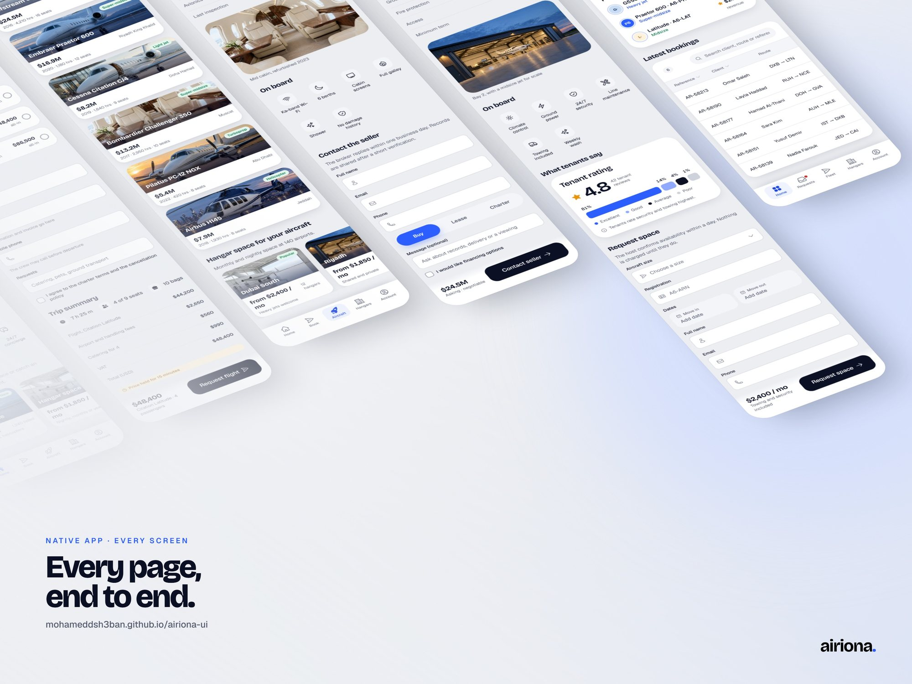
Fly it yourself.
Designed and built by Mohamed Shaban, m2a-dev team. For more like this, visit m2a-dev.de.